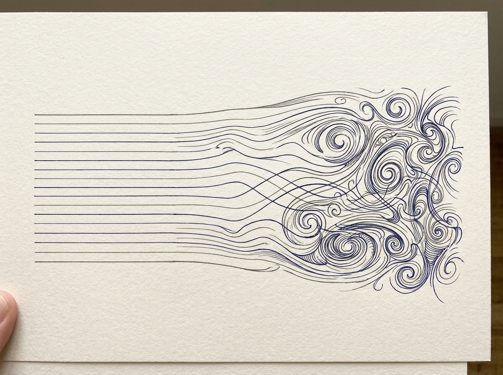

Fluid Dynamics·Published 2026-11-04·1 min read·16 equations
Vorticity Stretching and Energy Cascades in Incompressible Turbulence
Prof. Henrik Lindqvist
Nordic Center for Continuum Mechanics
Abstract
An analytical decomposition of the three-dimensional enstrophy budget examining alignment between the vorticity vector and the intermediate strain-rate eigenvector.

Plate 2. Streamline transition from laminar shear into coherent vortical filaments.
1. The Vorticity Transport Equation
Taking the curl of the incompressible Navier-Stokes momentum equation eliminates pressure and isolates the evolution of the vorticity vector ω=∇×u:
∂t∂ω+(u⋅∇)ω=(ω⋅∇)u+ν∇2ω
In two dimensions, the vortex-stretching term (ω⋅∇)u vanishes identically. In three dimensions, contracting with ω produces the enstrophy production equation:
21DtD∣ω∣2=ωiSijωj−ν∣∇ω∣2
where Sij=21(∂iuj+∂jui) is the symmetric rate-of-strain tensor with ordered eigenvalues λ1≥λ2≥λ3 satisfying λ1+λ2+λ3=0.
2. Kolmogorov Inertial Scaling
Within the inertial range η≪r≪L, dimensional homogeneity of the mean energy dissipation rate ε yields the classical −5/3 kinetic energy spectrum:
E(k)=CKε2/3k−5/3,η=(εν3)1/4
Strain Eigenframe Alignment
Direct numerical simulations consistently demonstrate that ω aligns preferentially with the intermediate eigenvector e2 rather than the maximal stretching axis e1, because positive λ2>0 sustains sheet-to-tube roll-up without destabilizing axial shear.
Cite This Monograph
@article{lindqvist2026vorticity,
title={Vorticity Stretching and Energy Cascades in Incompressible Turbulence},
author={Prof. Henrik Lindqvist},
journal={AmplitudeLand Scientific Journal},
year={2026},
url={https://Mostafa-gh-phys.github.io/amplitudeland-/posts/vorticity-stretching-navier-stokes/},
doi={10.48550/ax.2026.0098}
}